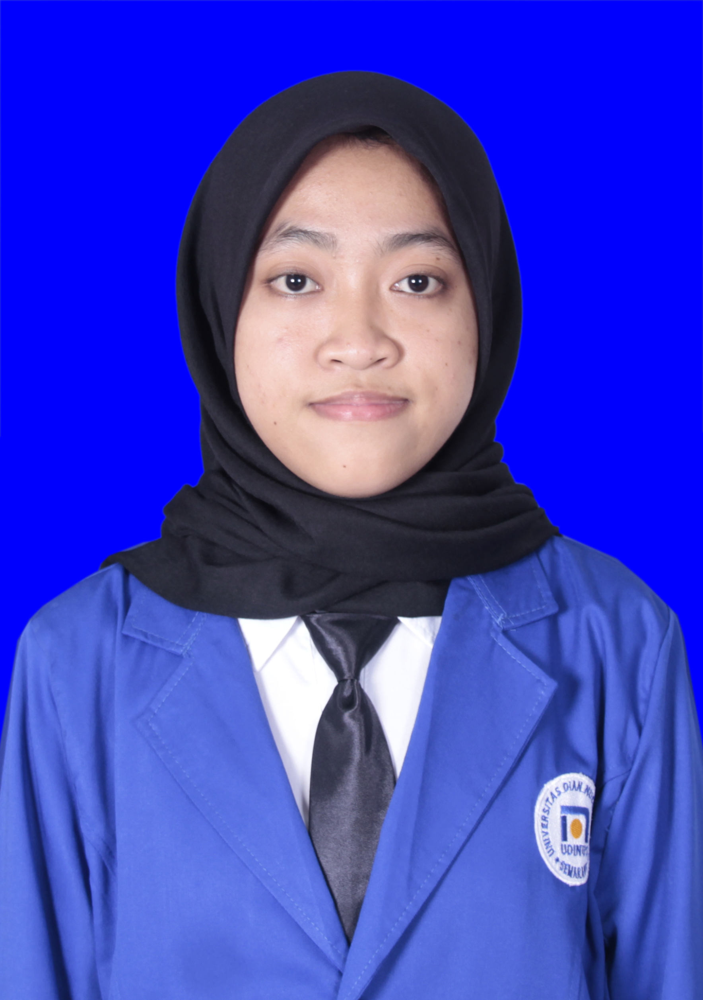

| Nama |
: Nadia Eka Aprilia |
| NIM |
: A11.2022.14053 |
 |
| Dosen Wali |
: Dr. Sendi Novianto, S.kom, M.t |
| Tempat, Tanggal lahir |
: Pati, 27 april 2004 |
| Jenis Kelamin |
: Perempuan |
| Alamat Asal |
: Ds. Trangkil rt 4 rw 3, Kec. Trangkil, Kab. pati |
| Alamat Semarang |
: Jl. Sadewa VII No. 11A, Pendrikan Lor, kec. Semarang Tengah, Kota semarang |
| Email |
: 111202214053@mhs.dinus.ac.id |
jadwal KRS
| No |
Kode Mata Kuliah |
Kelompok |
Mata Kuliah |
SKS |
Status |
| 1 |
A11.54101 |
A11.4103 |
Kalkulus 1 |
4 |
B |
| 2 |
A11.54105 |
A11.4103 |
Dasar Pemprograman |
4 |
B |
| 3 |
A11.54302 |
A11.4103 |
Matematika diskrit |
3 |
B |
| 4 |
A11.54314 |
A11.4103 |
Pemprograman Berbasis Web |
2 |
B |
| 5 |
A11.54403 |
A11.4103 |
Organisasi dan Arsitektur Komputer |
3 |
B |
| 6 |
AF201704 |
A11.4103 |
Dasar-Dasar Komputasi |
2 |
B |
| 7 |
U201704 |
A11.4103 |
Pengantar Teknologi Informasi |
2 |
B |